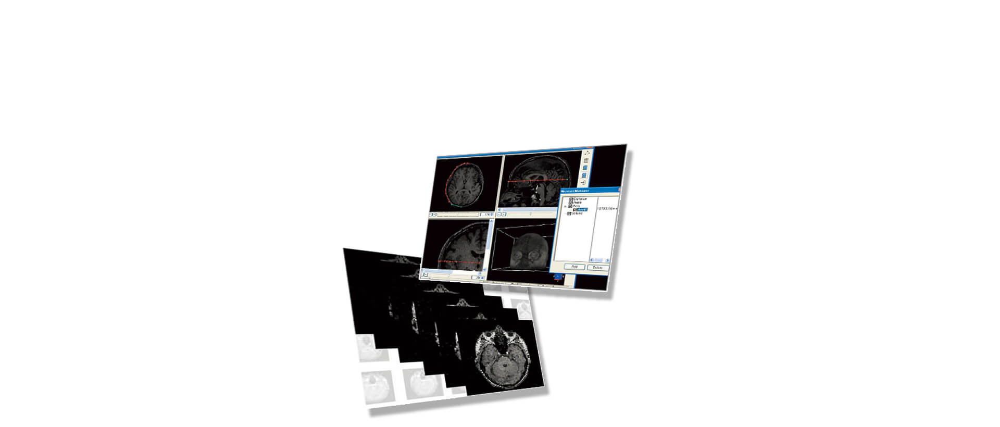

Volume Extractor
三次元画像可視化システム
株式会社 i-Plants Systems 社製の三次元画像可視化システム Volume Extractorは、2D画像から3D画像を作成・表示し、編集するアプリケーションです。
次のようなお悩みをお持ちのお客様にお勧めです
- 壊さずに内部を観察したい
- 3Dで直感的な画像を表示したい
- 実際に造形できるモデルを製作したい
| 必須環境 | 推奨環境 | |
|---|---|---|
| OS | Microsoft® Windows® XP Professional 32bit※,64bit Microsoft® Windows® Vista 32bit※,64bit Microsoft® Windows® 7 32bit※,64bit Microsoft® Windows® 8 32bit※,64bit ※32bit版は、Ver.3.3.0.0が最終版となります。 |
|
| CPU | Intel® Pentium® 4 2.8GHz 以上 |
Intel® Core™2Duo E6400 以上 （デュアルコアプロセッサー推奨） |
| メモリ | 512MB 以上 | 2GB 以上推奨 |
| グラフィック | NVIDIA® GeForce® 5900 / ATI™ RADEON™ 9800 以上 VRAM 64MB 以上 |
NVIDIA® Quadro® FX 1300 以上 VRAM 256MB 以上 |
| モニタ | XGA（1,024×768） 32bit カラー |
SXGA（1,280×1,024）以上 32bit カラー |